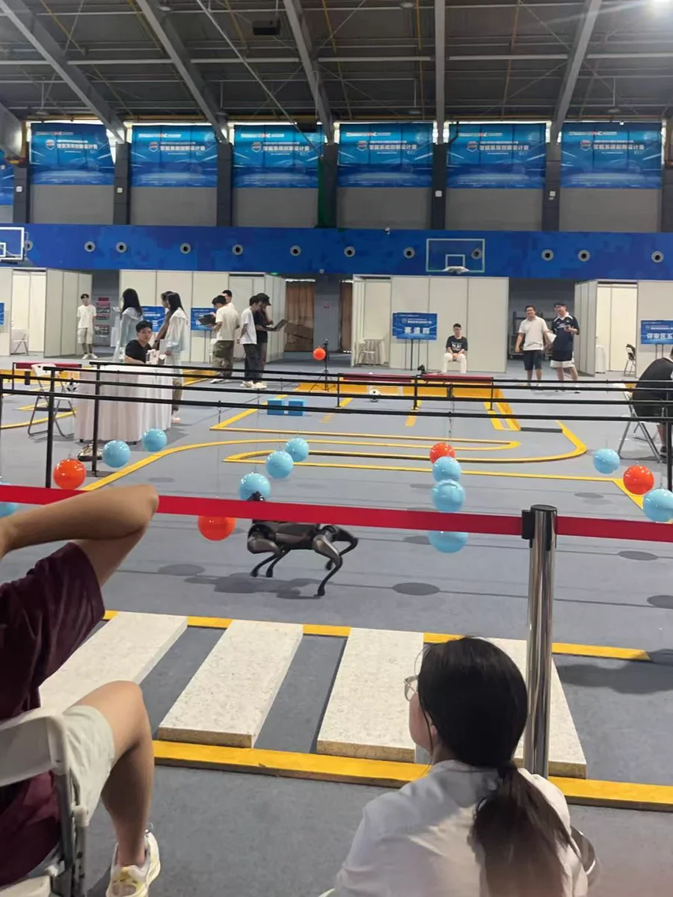

2025
无人机感知定位与事件视觉避障
在 Jetson Orin NX 上联调 FastLIO2、YOLO11-OBB、通信链路与地面站回传，并测试事件视觉条件下的在线避障过程。
Wuhan University
Electronic Information Engineering
Embodied intelligence / robot learning / real-world systems
My current work sits at the point where perception becomes physical action.
近期的工作从嵌入式与无人系统逐渐走向具身智能：在真实机械臂上研究视觉强化学习，也在四足机器人赛道中处理感知、状态机与运动控制。处理器、RTOS、FPGA 和无人机项目，则构成了理解实时性、硬件边界与系统联调的底层背景。
Embodied systems
Real-world evaluation · 80 sec
01 / Robot learning
基于 RLinf 搭建真实 Franka 在线强化学习系统，以 CNN 视觉策略学习 6-DoF 末端增量控制。
SAC / RLPD 训练中，将 SpaceMouse 采集的 20 条成功示教与在线 replay 按 1:1 混合。NUC 负责真机交互，RTX 4090 负责 rollout 与训练，双机之间通过 Ray 运行异步 Actor–Learner 并同步策略权重。
实验中定位到夹持物相对夹爪位姿漂移导致的数据非平稳问题。重新固定装夹并统一数据条件后，在标准随机初始位姿评测中完成 20/20 次自主成功；黑图、冻结帧、时序延迟和背景变化实验用于检查视觉闭环依赖与域外失效模式。

Competition track · CyberDog
02 / Legged robotics
小米杯 · 全国三等奖
面向复杂赛道自主运行任务，使用 ROS 2 / Gazebo 完成从仿真验证到真实 CyberDog 平台迁移。
系统覆盖 11 个赛段，以分层 FSM 组织赛程状态与运动控制。仿真环境用于复现赛段、检查状态转换和控制逻辑，随后迁移到实机进行完整赛道联调。
机载 RGB / RGB-D 相机与视觉、激光、腿式里程计共同提供环境和自身状态信息；黄线、球体、障碍及指定目标识别接口，与定位、感知、运动控制等 ROS 2 模块在同一闭环中完成测试。
Systems foundation
2025
在 Jetson Orin NX 上联调 FastLIO2、YOLO11-OBB、通信链路与地面站回传，并测试事件视觉条件下的在线避障过程。
2025
五级流水线、冒险处理、RT-Thread 移植和 Coremark 测试串在一起，问题集中在处理器设计和系统软件的接口处。
2025
ZYNQ + ADS1299 的多通道脑电采集台架，PL 端实现 FBCCA 并行流水线，围绕采集链路和实时处理做验证。
2024
ESP32-S3 + FreeRTOS 的边缘计算智能车，围绕定位、控制接口和系统调试展开。
2024
RTK 定位、PX4 / QGC / NTRIP 配置、FastPlanner 自主避障和管理网站共同组成低空任务系统。
Field notes


Approach
感知、策略与控制只有放进同一个实时闭环，才开始暴露真正的问题。
装夹、时延、传感噪声和接口状态，往往直接改变数据与策略行为。
重复试验、消融和失败样本，用来区分偶然成功与稳定行为。
从计算平台到上层策略的完整链路，使具身问题落到可检查的工程细节上。
Contact